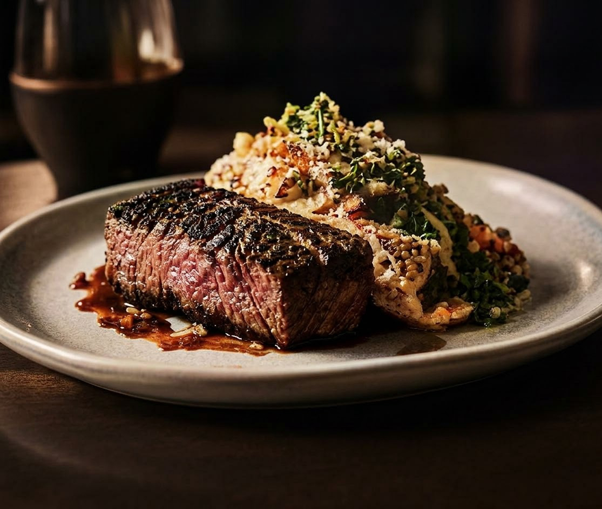
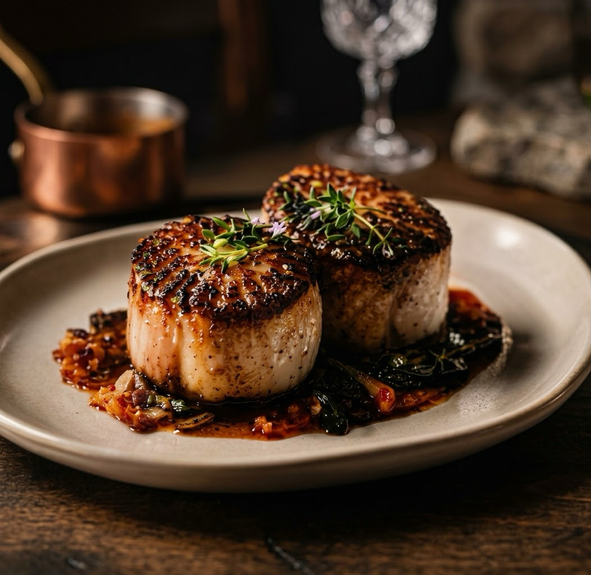
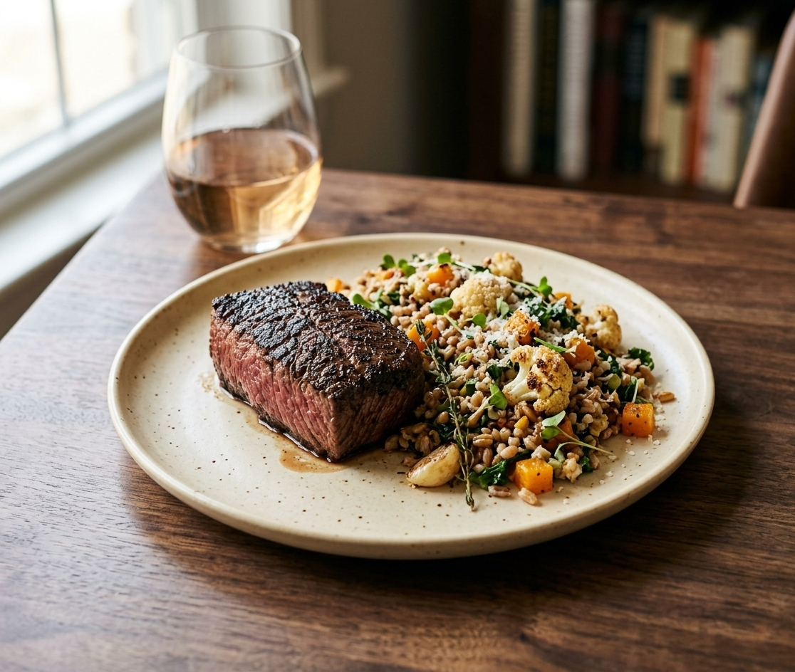

Seasonal American · Est. 2014
A table worth
A table worth
staying at.
A short menu that changes with the coast, a wine list chosen by the people who pour it, and a dining room built for long conversations.
From the pass
Three plates people come back for
Photographed at service, not in a studio.



Private dining
A room for ten to fifty-two.
Rehearsal dinners, company tables and birthdays that need a door that closes.
Plan an eventDinner service
Tue–Thu 5:00–9:30pm
Fri–Sat 5:00–11:00pm
Sunday 4:00–9:00pm
Monday closed
214 Harbor Street · Walk-ins welcome at the bar
Like this one?
A restaurant site that fills a quiet Tuesday.
Your photography, your menu, your reservation system. The structure above is the starting point, not the finished article.